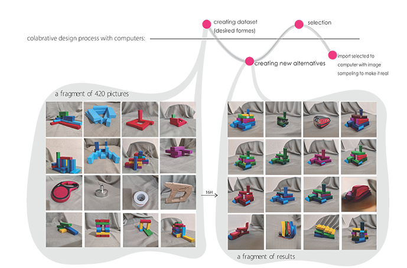
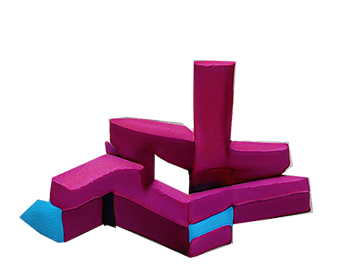
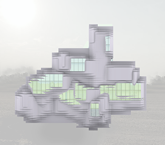

Aim of exploration:
creating alternatives
using AI
for a form design process
which has
been started traditionally
with a volume maquette
as an
input for training and I mixed
it with some
household objects for
diversity (in this case the
maquette
is made by toy
“Jenga” and the inputs
are pictures)
▾



Using Grasshopper for image sampling and creating algorithm to creaate form for buildings
▾